珍爱之物，碰不得也背不起
情境：徐胜利无意压死小松，道了歉也赔了酒，曹野却一句「我不接受你的道歉」。
遇到这种情况，可以这样做
- 别人的心头好，手要轻，话要稳。
- 「对不起」换不回一条命，也换不回一个心结。
- 再小的生命，在主人眼里也是家人。
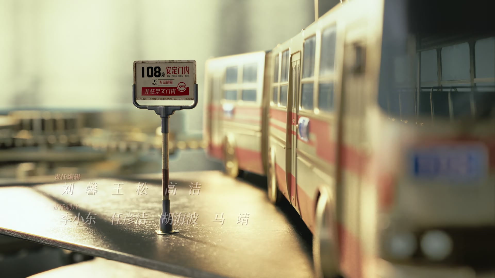
Drama Recap · 剧情图文总结
第 4 集 · 一根钉子扎到底
曹野的宠物小松鼠「小松」被徐胜利无意压死，一屋子人闹到惊动唐警官；徐胜利把自己灌出急性酒精中毒，住院时才等来汪导的电话。电影厂那厢吴老师揭穿他「粘三处」的把戏，千里之外的家里，父亲却偷偷粘起了被他撕碎的剧本。一场雨，让两人的雨衣生意在街头拔了头筹。
曹野视若亲子的松鼠「小松」被徐胜利半夜压死，屋里瞬间炸了锅，连唐警官都被惊动。徐胜利端着酒赔罪，被曹野一句「不是所有的事情，你说个对不起我就原谅你」顶了回来，夜里把自己喝到急性酒精中毒进了医院——住院时才听说，汪导给他打过电话。电影厂的吴老师当面揭穿他「粘三处」的把戏，老家那边，父亲却趁着夜深一页页粘起了被他撕掉的剧本。雨夜里一场雨衣生意，让两个年轻人第一次「拔了头筹」。
第 4 集，曹野的宠物小松鼠「小松」不见了。曹野满院子喊「我儿子小松不见了」，最后发现小松是被徐胜利半夜起来时压死的——一屋子人炸了锅，小东北劝不住，连唐警官都惊动了。曹野抱着小松哭：「咱俩是朋友，咱俩是父子，咱俩是同命相连的一家人……爹要不给你报仇，爹誓不为人。」
剧里的鸡毛蒜皮，往往是人生的缩影。这些情节不只是故事——当你在现实中遇到同样的处境时，它们能提醒你：先做什么、别做什么、怎么说才有效。
情境：徐胜利无意压死小松，道了歉也赔了酒，曹野却一句「我不接受你的道歉」。
情境：曹野不原谅徐胜利，一半是痛失小松，一半是看不惯他「刚来就摆谱」。
情境：徐胜利把自己喝进医院，醒来第一句还是惦记着汪导的电话。
情境：徐胜利粘三处记号去问吴老师「看没看过」，被一句「压根没看过」打回原形。
情境：父亲撕了儿子的剧本，又趁夜一页页粘好：「宁可让他心里骂我，也不想让他心里受苦。」
情境：一场雨，雨衣拔了头筹；一盘菜，屋里人和解。
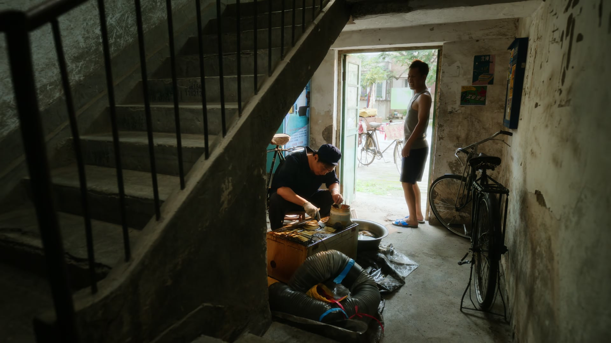
服装摊前，白姐拎着自己卤的吃食招呼庄庄和徐胜利：「姐不用这么客气。」徐胜利掏出小本子：「白姐，你刚才这个话，你再说一遍呗。」白姐奇怪：「这有什么好记的？」徐胜利认真地说：「我是个编剧，我听到有意思的话就会记下来。」白姐一拍手，索性把看家本事都掏了出来。
「咱们温州人做的生意，那是有口诀的。你们现在就摆的就不太对——只要往上摆，他就有人买，充气的挂得高一点；只要摆得多，他就有人摸；只要货干净，客户就高兴；只要品质好，买的人就敢下单。」白姐一边说一边动手把货一件件往上挂，「你牌子挂这么低，谁看得见？挂起来。」
「还有最重要的一点，得会吆喝。你们两个人，谁会吆喝？」庄庄抢着举手：「我来！」白姐教她：「手伸起来，插腰。走过路过，不要错过！声音大声点，抬头挺胸，自信！」庄庄喊得有模有样，白姐又帮她开价：「二十块钱一件！这是从广州来的真丝混纺，特别好，不怕皱。」徐胜利在旁边笑道：「走过路过不要错过，买不了吃亏，买不了上当。」
开摊头一天，两人盘账定规矩：「一共五百，我四百你一百，二八分。」庄庄直摇头：「我这一百都是你借我的，再少我就自己干了。」徐胜利一句「生意是生意，温州人啊，生意经」把话说死。两人又约定：庄庄周一到周五上课，周末才能来，徐胜利负责吆喝，庄庄负责搭配推销。「那自今天起，咱们俩这小团队，就算是正式成立了！」
关键台词 · KEY QUOTES
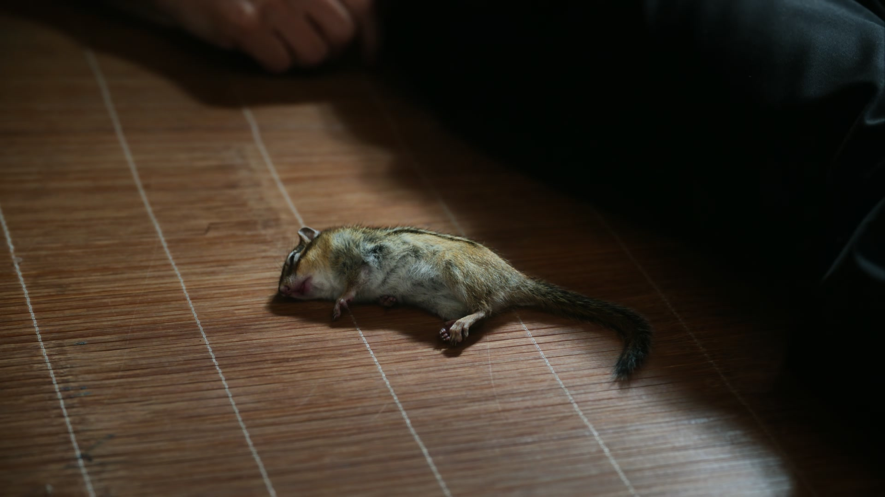
一大清早，曹野扒开 108 的窗帘大喊：「我儿子小松不见了！找不着了！」一屋子人被吵醒。陶亮亮揉着眼睛：「是不是你给我弄没的？」曹野红着眼：「我屋里屋外、上上下下都找了。昨天晚上还在的，这都是我昨天晚上给他准备的晚饭。」
众人翻遍了楼道。陶亮亮问「昨天晚上谁起来了」，曹野的目光落在徐胜利身上：「你呢，徐胜利？我说了个厕所，那就是他了。你是后半夜回来的吧。」小东北插话：「这小松鼠，昨天半夜自己从笼子里出来了，门一开一关，他就钻出去了。」曹野却越说越激动：「徐胜利，我跟你说话呢！有一天你们俩都不在，他说小松有细菌、不卫生，他早就看不上我儿子了！」
动静惊动了全院子：「108 那几个活爹，又出什么幺蛾子了？」小东北来拍门：「开门！这要是出人命了，我们可不再忍了！」王云芳连忙劝架，有人喊「唐警官来了」。唐警官进门就头疼：「你这个小旅馆怎么管理的？天天给我惹事，我一星期来八遍你知道吗！」又转头对徐胜利说：「你来这儿有一周吗？警察都来两趟了吧。我现在是真后悔，当初把您从火车站请到这儿来。」徐胜利低头：「给您添麻烦了，真对不起，我想办法解决。」
关键台词 · KEY QUOTES
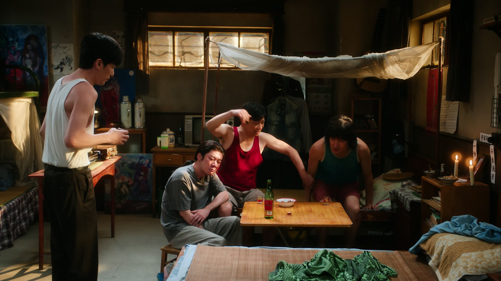
唐警官走后，曹野蹲在院子中间，抱着小松不肯松手：「哥，弟弟——小松跟你们一样，都是我最亲近的家人。跟着我从山西老家来到这北京城，千里万里，我们一路相伴。多少个孤独的时刻，都是他陪伴着我；多少个寒冷的夜晚，都是他用体温温暖了我的心窝。」
「松，咱俩是朋友，咱俩是父子，咱俩是同命相连的一家人。但是自从你跟了我，咱俩一直在共苦，咱俩都没有同甘过，享福没有让你过一天好日子，你就被坏人给害了呀你。你放心，爹要不给你报这个仇，爹誓不为人。」院里的其他人都不说话了。
徐胜利上前：「曹爷，我真不是故意的。他什么时候上的我床，我真不知道，但确实被我压了，我向你道歉。我这人平时不怎么喝酒，这个就当赔罪了。」曹野冷笑：「什么叫就当啊？人上坟还得倒三杯呢，你在这儿喝一杯给谁看？」徐胜利追问：「那你说，这个事我怎么做才方便？」曹野一字一句：「我告诉你徐胜利，在这个世界上，不是所有的事情发生了，你说个对不起我就会原谅你。我不接受你的道歉——欠债还钱，杀人偿命，那是条命！你把小松全须全尾地还给我，我就原谅你。你能做到吗？你又做不到。」
徐胜利沉默了，忽然开口：「我知道，你们对我有意见，你们觉得我傲气。我承认——我刚来这儿，我是有傲气，但我从来没瞧不起过任何人。都是萍水相逢，能住进一个屋就是缘分，怎么就不能好好处呢？」他说完，屋里谁也没接话。
关键台词 · KEY QUOTES
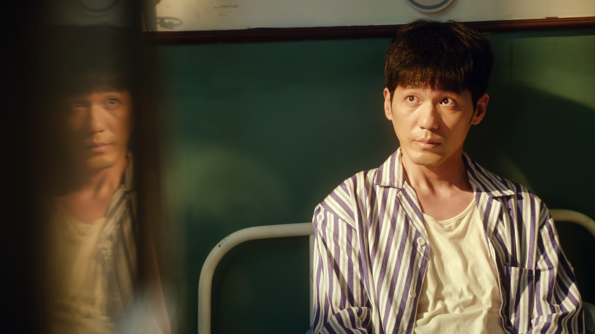
赔罪的酒没人领情，徐胜利心里那口窝囊气越积越满，索性一个人喝起闷酒，把自己喝到急性酒精中毒。沈冉冉见他脸色不对，一把按住他：「你干什么去？你坐下！要不要命了？你都喝得急性酒精中毒了你知道吗？受到四十多度的酒，气管都烧肿了。」
徐胜利迷迷糊糊还在惦记正事：「昨天汪老给我打电话了，我爷得给人回个电话。」沈冉冉劝他：「那你今天回去，帮我给汪导回个电话呗。」徐胜利挣扎着爬起来：「那你可千万不能说，我是喝酒才出院的。」沈冉冉看他这样，又好气又好笑：「我现在知道怕了？知道喝那么多干吗呢。」
屋里人议论起来：「咱这道子有点过了。」「过了？宝哥那事赶事顶成这样了，现在这人也在医院里呢。」沈冉冉听不下去：「你们几个大男人，天天整人有意思吗？非得把别人赶出去了你们才开心？大家都是外地的，有没有必要？他现在病得很严重，这个病你们几个都有责任，医药费得出吧！」曹野回敬：「那我儿子小松还是被他压死的，那我也没找他赔钱的呀。」陶亮亮帮腔：「再说了，他咬牙放屁打呼噜，在这儿住还说梦话，这谁受得了啊！」沈冉冉一瞪眼：「姑娘怎么了？要炸庙，要杀人，我倒想看看！」
关键台词 · KEY QUOTES
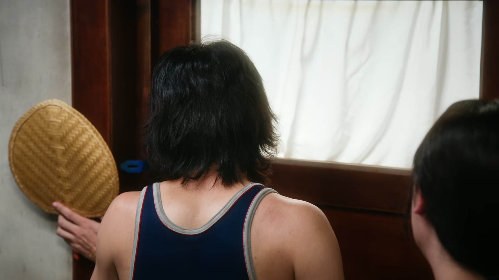
吵到 108 门口，陶亮亮看见庄庄，忽然换上一张笑脸：「这不是明星妹妹吗？我正想跟你汇报呢，咱们这愿望啊，要成真了！」庄庄问什么愿望，陶亮亮眉飞色舞：「我们屋里那个讨厌鬼，马上要搬走了。你们屋这个，也待不久了。」
庄庄拦住他：「他不能走，他是我姐。」陶亮亮一愣：「你们俩要是敢欺负我姐，我跟你们没完。」陶亮亮被呛住：「不是，你姐？他怎么有这么大姐呢？」庄庄懒得解释，转身护着沈冉冉进了屋。
身后，陶亮亮还在喊「别走」，被屋里一句「你挂了，不信你试试」顶了回来。他悻悻退开，嘴上不服：「写剧本的我是真不懂，我看你这剧本越写越好了。」
关键台词 · KEY QUOTES
伤还没好利索，徐胜利又出现在电影厂门口。吴老师一见他就皱眉：「怎么又是你呀？我们寄压的剧本都寄回去了，你没收到吗？」徐胜利却不绕弯：「吴老师，这次来我不找汪导，我找您。剧本我收到了，我就想问您——这剧本，您看了吗？」吴老师愣了：「这还用问吗？」徐胜利盯着他：「您就说，看还是没看。整个剧本，我粘了三处。您不会是看完之后，又粘回去了吧？」
办公室里鸦雀无声。吴老师沉默片刻：「小伙子，我实话告诉你吧。不用等，就没有让我们看过你的剧本，明白了吧？」徐胜利急了：「吴老师，各位老师，我是真的把你们当前辈。我不过是一个怀揣梦想的年轻人，我多么希望能遇到一个像你们这样的老师、老前辈，能够指点我一下，就像黑夜中看到灯塔，为我指明方向。难道这么点光亮，您都不愿意做吗？」
吴老师摆摆手：「什么梦想，什么灯塔。我们这是创作室，平时任务很繁重。你愿意等，就在这儿继续等，我没意见，但是别的办公室得等。我们这些人都是养家糊口，没人陪你过家家。」最后他缓了缓语气：「年轻人，你先把剧本拿回去，再打磨打磨，下次再寄给我吧。你放心，我们一定会看。」徐胜利把那句「一定会看」记在纸上，转身离开。
关键台词 · KEY QUOTES
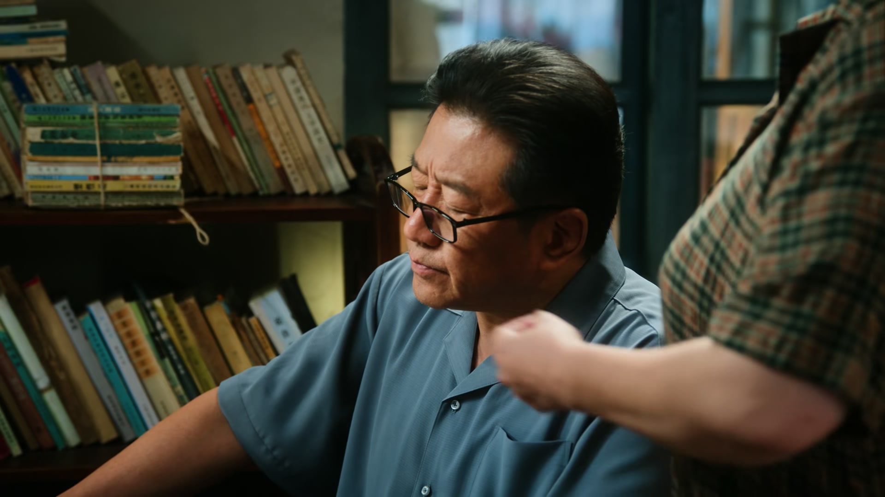
老家的灯还亮着。徐母进屋，看见老伴儿正捧着儿子的剧本看得入神，忍不住挤兑他：「还看啊？你这翻来覆去地看多少遍了，都快背下来了吧。要不然，你去演去？」徐父不抬头：「别说，我儿子这个剧本写得挺有意思，看着看着，还真是看进去了。」
徐母叹口气：「不是，人家孩子在家的时候，你老跟人家对着干。人家走了，你好好地把剧本撕了，还在那站起来重新看。你看看，过去那点事就没完没了了。」徐父梗着脖子：「剧本撕了？这不粘好了，粘好了，改正了行吗！」他忽然想起什么，「你干什么去？」徐母头也不回：「外头那书，卖了呀！」徐父急了：「你卖！你卖了这个行吗？这都是他的东西，回来找不到，他不着急了吗？」
「他还回来呀？」徐母站住，「他怎么不回来呀？他不是被你气走的吗？那怎么的，你再把我气走，这个家就剩你一个。」徐父不吭声了。徐母放软了语气：「满屋子的这些书，哪一本不是你给他买的？他上初中、上高中，要什么你给他买什么。人家大了，孩子想写写剧本，你跟人家说写字不能当饭吃，把人家剧本也撕了。他现在去北京了，你到现在看上剧本了，你是不是口不对心？」徐父被戳中心事，闷声道：「去北京，也不是我不支持他。北京什么地方啊，人才济济，这不替他担心吗？怕他到北京碰壁。所以啊，宁可让他心里骂我，也不想让他心里受苦。」
关键台词 · KEY QUOTES
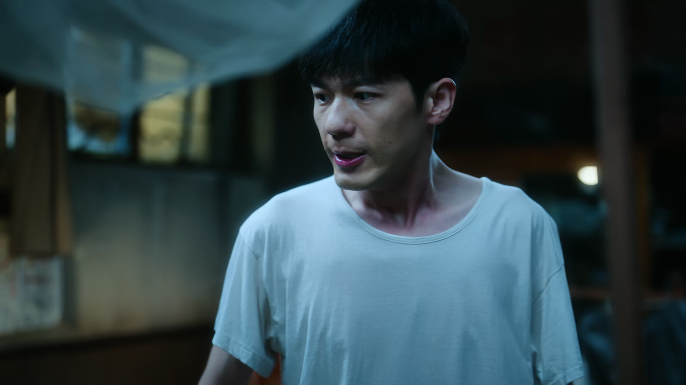
回到 108，徐胜利晚上写剧本，一盏灯晃得曹野睡不着。曹野扒拉两下：「成宿成宿点着灯，非想把这一屋人都熬死是吧？不就是点个灯吗，给你调一下不就完了吗。」徐胜利也来了火：「你做人太自私了吧，有那么调的吗？」曹野把灯一拨：「这么喜欢亮，没亮不行是吧？那对着自己，对着脸好好照。」两人呛到「你闭嘴吧」，屋里火药味十足。
徐胜利忽然站了起来：「我告诉你们，我是辞了国营厂的铁饭碗，才义无反顾来北京的！汪导就是我救命稻草，他给我打电话，我没接上，这是我的病！我见不到汪导，我就不知道后面要做什么。但我得留在北京，我得养活自己。我只能白天去摆摊，我只能晚上回来写。你们能不能容得下我，那是你们的事。但我就问你们一句——要是有人要砸你们的饭碗，你们能不回去拼命吗？」
屋里安静了。陶亮亮靠在门边，轻声接了一句：「那俩也真是的，谁死里边，那都有个比命还重要的地方，那不能碰啊。」他看着徐胜利的背影，「这孩子是个好孩子，刚才气成那样，也没动你的萨克斯，也没动你的画。咱差不多就得了，懂吗？」
关键台词 · KEY QUOTES
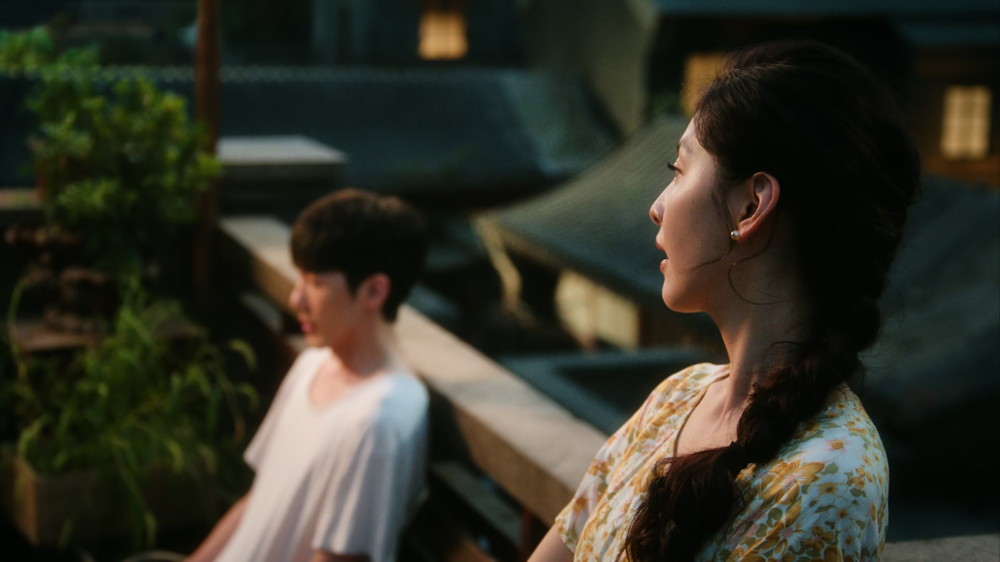
陶亮亮在院里拦住徐胜利：「俞大编剧，刚刚那番发言，很适合慷慨激昂啊。」徐胜利有点不好意思：「不好意思，我刚才有点激动了。」陶亮亮摆摆手：「该激动就激动，不激动怎么搞创作。」
夜深了，徐胜利一个人爬上顶楼，掏出纸笔。陶亮亮也跟着上来：「你早还不睡啊？」徐胜利说：「我上来溜达溜达，要是下面太吵。我看这挺好的，安安静静的，很适合写剧本。」陶亮亮把一支笔递过来：「来，试试。」徐胜利接过笔，在纸上落了笔。
陶亮亮看他低头写字的样子，忽然笑了：「挺好的，挺有好学生的感觉。好好写，写出一个名堂来，给大家瞧瞧。」他顿了顿，「好好写，早点写出名，早点还我钱。」徐胜利抬起头，也笑了：「行，老师再见。」
关键台词 · KEY QUOTES
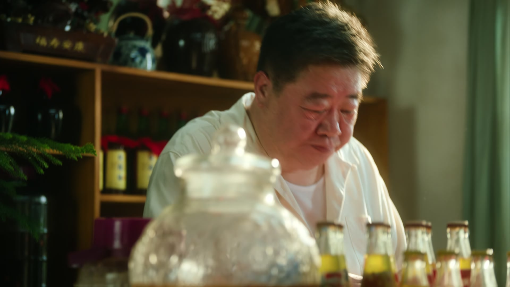
老字号早点铺里，一位穿着讲究的中年人往桌前一坐：「老板，两碗粥，四根油条。」他掏出大哥大打电话，嗓门不小：「整个俄罗斯一半以上，那连衣裙都是我给进口的。不垃圾是啥你不知道吗？不垃圾就是那连衣裙。我一天好几万呢，我能差那点钱吗？喂？喂！信号不好，回头再说。」
老板认得他：「听听你催命。儿子呢？」中年人摆手：「小兔崽子不知道到哪儿去了，搞艺术去了呗。活着就行了，我这不替他来看您吗？」正说着，陶亮亮拎着萨克斯进来：「爸，你亲儿子都晾了呢。我不是吃完饭再烫吗？来，老样子，三两牛肉，然后炸酱面。」
父子俩一个要面子，一个唱反调，点完单，陶亮亮把萨克斯往桌上一搁。父亲瞥他一眼：「小子，能吃成客的走了。」陶亮亮不接话，扭头喊老板：「头颠，前方桌上啊。」——爷俩的早餐，就这么拌着嘴吃完了。
关键台词 · KEY QUOTES
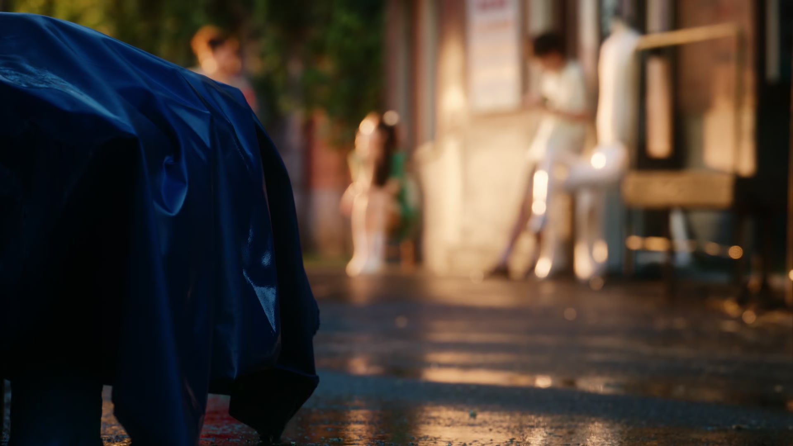
大太阳底下，徐胜利穿着雨衣站在摊前。庄庄看他热得冒汗，一把拉他：「这大太阳的，你穿雨衣干嘛呀？」徐胜利一本正经：「我外面是雨衣，里面是短袖。我这不是进得多，展示咱家的服装吗？」正说着，天边滚过雷声——「下雨了！下雨了！」庄庄反应神速：「快，把雨衣都拿出来！」
一场雨下得又急又猛，市场里没几家带雨具的。徐胜利屯的雨衣瞬间成了抢手货，白姐在旁看得直咂嘴：「小徐兄弟，今天啊，你们可是在街上拔了头筹了！转多少了？」徐胜利嘿嘿一笑：「老天赏的。」白姐追问：「赶紧说，怎么想到这发的？」徐胜利招了：「我看着天气预报，说是后面几天都要下雨。我想着市场里没人卖雨衣啊，那我就进点儿试试呗。」
白姐竖起大拇指：「那给你聪明的。赚到钱了，是不是该请姐喝点什么呀？」三人蹲在棚下避雨，白姐看着两个人，忽然感叹：「你们俩什么关系？」庄庄抢答：「合伙人关系。」白姐笑：「我刚才看见你们俩在雨中的画面，我这脑子，一下就回到我年轻的时候。那说起来，当年我也是好多人追呢。」庄庄被她说得脸一红，徐胜利赶紧岔开话题：「姐，你眼睛挺大。」
雨歇了，庄庄蹲在地上算账：「这么两百五十块，这么多！」徐胜利点点头，把账本一合。晚上，小东北的「哥」把他叫到一边：「小东北今天在火车站又抢了不少客人，其他旅馆的几个老板都求我好几次了，想请你吃个饭，看怎么收拾收拾这个小东北。」小东北乐了：「我是没吃过饭是吧？他们请我吃个饭，我就帮他们办事。明白了哥，我再去点点他们，看看他们到底有多大诚意。」
关键台词 · KEY QUOTES
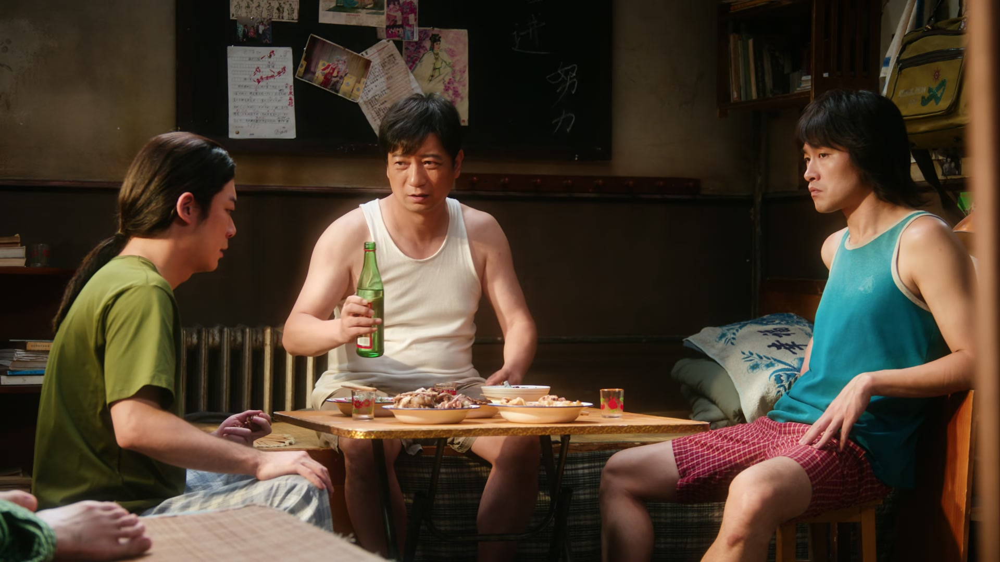
陶亮亮好心劝徐胜利：「你们俩做生意挣钱了，得注意一点，别人看到会眼红的。」徐胜利不在乎：「眼红啥？我俩做生意挣钱了，清楚一下不行啊。」陶亮亮沉下脸：「我说你是为了你好。现在我跟你说好话，真要碰上那些不讲究的滚刀肉，我对他们客气，他们就敢伤及无辜。徐老师，我看你这回好利索了。别心里去，别跟他们一般见识。要不，我给你换个房间？」
徐胜利摇头：「不用。我还就一根钉子扎到底了，就那屋了。」陶亮亮追问：「这合适吗？」徐胜利答得干脆：「合适。」又补一句，「徐老师，有事你去说话啊。」——这句话，把陶亮亮堵了回去。
一屋子人破天荒聚在一起吃饭。宝哥端来一盘菜：「这菜是专门给咱带的，都热过一回了，再不趁热吃，可就不好吃了。」曹野赌气不吃，宝哥劝：「宝哥他一样吃了一口了，咱不能光着他嘴短啊。就他吃，咱俩不吃，现在咱俩不占理。」陶亮亮笑：「那你们俩意思就是，有福同享、有难同当呗？」
「那吃吧，吃吧。」四个人围着盘子动起筷子。庄庄夹走一块，陶亮亮叫起来：「你这一口吃太多了吧！」徐胜利赶紧又夹一筷子：「我能吃一口就翻一口。」曹野看看他们，闷头扒饭：「好吃。」一屋子人，这一晚谁也没再说「搬走」的事。
关键台词 · KEY QUOTES
压死小松成了全屋公敌，醉酒入院后等来汪导电话；白天摆摊卖雨衣拔头筹，晚上点灯写剧本，「一根钉子扎到底」不肯换房。
跟白姐学温州人的生意口诀，暴雨里卖光雨衣；护着沈冉冉放话「他是我姐」，摆摊算账头头是道。
替醉倒的徐胜利挡酒、替他跟屋里人吵架，认下庄庄这个「妹妹」，嘴硬心软。
劝徐胜利低调、给他换房，又递上笔说「写出个名堂给大家瞧瞧」；父子在早点铺拌嘴，感情都在一碗炸酱面里。
痛失小松后抱着它哭「爹要给你报仇」，不肯接受徐胜利的道歉；最后被一盘菜劝回桌前，闷头吃饭。
夜里偷偷看儿子的剧本，被妻子数落「口不对心」，嘴上不服，手底下把撕破的剧本一页页粘好。
戳穿老伴「人家走了你倒看上剧本了」，又劝他吃饭，护着儿子的东西不让卖。
把生意口诀教给庄庄和徐胜利，见证雨衣拔头筹，唠起「当年我也是好多人追」。
为 108 的鸡飞狗跳上门，撂下「一天六块钱的床钱，我得操六百块钱的心」。
劝架、挡事、张罗，夜里被「哥」叫去商量「怎么收拾收拾这个小东北」，为下一集埋线。
一只松鼠的「葬礼」，让一屋子北漂第一次认清了彼此的分量——有比命更重要的地方，不能碰。
徐胜利用胶水标记试探电影厂，「压根没看过」四个字，比任何退稿信都扎心。
父亲撕了儿子的剧本又偷偷粘好：「宁可让他心里骂我，也不想让他心里受苦。」
一场暴雨，两个摆摊的年轻人成了街头最亮眼的生意人——机会偏爱有心人。
「有福同享、有难同当」，108 的一屋子人，终于围着同一盘菜放下了芥蒂。
汪导主动打来过电话，徐胜利却因醉酒没接上——这通错过的电话，会是转机还是更大的失落？
「看看怎么收拾收拾这个小东北」——旅馆之间的暗流，正朝冬去春来涌来。
老家那本粘好的剧本，会不会有朝一日传到汪导手里？
雨衣生意让两人尝到了甜头，可眼红的人也开始盯上他们了。